Our ESL correction HITs were conceived as part of a translation pipeline, so that the HITs take as input data the output data of a previously completed translation task. The output data from this translation HIT is available as a set of Indian Parallel Corpora. The translation task asked Turkers to translate into English sentences taken from a variety of Wikipedia pages written in one of several Indian languages (see the paper for more information). The translated sentences, which contain grammatical and stylistic errors, are the input sentences to the ESL HIT. Since the translated sentences were pulled from Wikipedia, the sentences are easily grouped into sets based on their source documents, so that translated sentences from the same source refer to the same general topic. Documents were assigned a unique document id number, and each sentence in the database is stored with its document id, which is used during the HIT generation.
Input sentences to our HIT are stored in the esl_sentences data table (see Data Representation and Storage for information on database tables and data formatting conventions). So far, our HIT has taken sentences only from the Urdu-English dataset of the Indian languages corpus. The corpus provides 4 English translations of each original Urdu sentence. Because of the poor quality and significant ambiguity of many of the translations, we proprocessed sentences and included only the 'best' sentence from each group of four, as determined by a translation-rating HIT (citation). In the translation-rating HIT, Turkers were presented with 4 parallel translations of the same Urdu sentence and asked to choose the best one (cast a 'vote' for the best translation). We take the 'best' translation to be the translation that receives the highest number of votes, with ties going to whichever sentences was listed first. After reducing our data set to only the best translations, we process the sentences to eliminate sentences with too few (< 5) or too many (> 15) words. This leaves us with approximately 5400 error-ful English senteces.
We present workers with 5 sentences per HIT, 4 of which are translations with unknown errors and one of which is a control with known errors. The choice of 5 sentences was partially due to the difficulty of the task (10 sentences could become lengthy and tedious based on the quality of the translations) and partially due to server restrictions (sending data for larger numbers of sentences sometimes caused a URI overflow error). Turkers were paid 5 cents per sentence, or 25 cents per HIT.
Because of the frequency of ambiguous translations, we chose to group sentences by document within each HIT, so that all the sentences presented to the Turker within a HIT come from the same document and relate to the same topic, rather than choose sentences for each HIT at random. Our hope was that seeing a group of related sentences together would help Turkers understand translations that were more ambiguous or had more serious errors.
Generating HITs involves 3 tables in the database: hits, esl_sentences, esl_hits_data; see Data Representation and Storage for information on database tables
Each HIT consists of 5 sentences: 4 translations and one control. To generate the HITs, we pull all the sentences from the esl_sentences table, sort by document id, and batch them into groups of four sentences. For each group, we generate a control based on the four sentences (see Quality control section), which provides the fifth sentence. One entry, corresponding to the specific HIT, is added to the hits table; at this point, the mturk_hit_id column is left blank, do be filled later when the HIT is actually posted to MTurk. The set of five sentences is added to the esl_hits_data table, with one entry corresponding to each sentence that will exist in this HIT.
Given a set of four translations, we take the document ID of those translations. In the case that the sentences come from more than one document (when the block of four sentences drawn from the database bridged a gap between two documents) we take the document ID of the first sentence. We query Wikipedia for the interlanguage links that exist for that document ID. (The interlanguage links are the pages which contain the same title (same topic) but are in a different language; they are not translations of the original page.) If the page contains an English language link, we pull the text of the English page.
To ensure that only true sentences are selected as control sentences, we iterate through each sentence in the English text and eliminate sentences that do not contain both a noun and a verb (using the Python NLTK's ChunkParser for syntactic analysis). We attempted to do a more robust syntax parsing, but all phrases were given "Sentence" as their root by default, which made differentiation between complete sentences and fragments impossible. Using a simpler check for nouns and verbs was sufficient for our purposes, and successfully elminated most citations and titles that appear on Wikipedia pages.
For each sentence in the remaining English text, we calculate a tf*idf score, using term frequencies calculated from the 4 provided translations with which we are trying to match context and document frequencies calculated across all translations over all HITs. We choose the sentence with the highest score, eliminating sentences that are not to long (> 30 words) or too short (< 5 words).
We choose the number of errors to be introduced into the sentence as a random number, no greater than one third of the number of words in the sentence, and with a hard maximum at 5 errors. The maximums are enforced to ensure that the sentence is still comprehendable to the reader. We parse and POS-tag the sentence. We then introduce at random errors of the following types:
Ex. German forces surrendered in Italy on 29 April. → German forecs surrendered in an Italy on 29 April .
Ex. German forces surrendered in Italy on 29 April.→ German forces surrenders in Italy of 29 Apirl .
E.x. German forces surrendered in Italy on 29 April. → German forces surrenders in Italy of 29 Apirl .
E.x. German forces surrendered in Italy on 29 April. → German forecs surrendered in an Italy on 29 April .
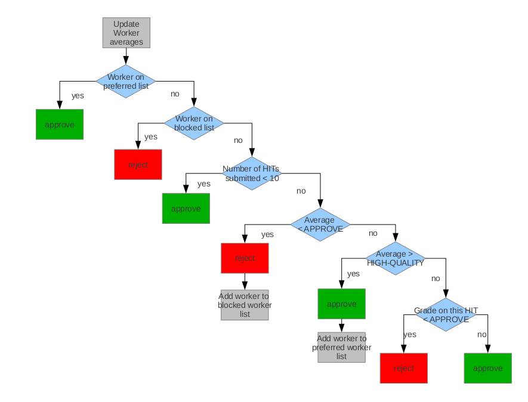
Our accept and high-quality thresholds are still being chosen, as they will likely change if we abandon the automatic grading method. The current grading algorithm is not robust to variations in the corrections that Turkers make, and results in low averages. Currently, our acceptance threshold is set at 0.2, and our high-quality at 0.6.| id | unique identifier |
| worker_id | unique alphanumeric worker ID provided from Mturk. |
| num_hits | total number of HITs the worker has submitted |
| num_correct_controls | total number of control errors that this worker has correctly edited. |
| status | current approve/reject status. See section on QC Grading for more detail. |
| statusdesc | description of the workers current approve/reject status; one of either 'Preapproval', 'Pending', 'Approved', or 'Blocked'. See section on QC Grading for more detail. |
| average | the average accuracy of the worker, calculated as num_correct_controls / num_controls |
| num_controls | total number of control edits that this worker has been presented. One control is one atomic edit appearing in the sentence, not once sentence. So if a worker submitted a HIT containing a control sentence with three errors, their num_controls would be incremented by three. |
| num_approved | total number of HITs that have been approved for this worker |
| id | unique identifier |
| mturk_assignment_id | unique alphanumeric assignment ID provided from Mturk. |
| hit_id | the integer identifier in the hits table of the HIT in which the control appears |
| worker_id | the integer identifier in the esl_workers table of the worker who submitted this assignment |
| status | unused, always set to "Open" |
| submit_time | the timestamp when the assignment was submitted |
| result | the full results submitted by the worker, as a JSON |
| data_status | unused |
| mturk_status | unused |
| accept_time | unused, the timestamp when the assignment was accepted |
| id | unique identifier |
| esl_sentence_id | the integer identifier in the esl_sentences table of the sentence |
| sentence | the text of the original sentence, into which the errors were added |
| err_idx | the index in the sentence where the edit was added |
| oldwd | the word as it appeared in the sentence before the edit was made |
| newwd: | the word as it appears in the sentence after the edit is made |
| mode | the mode (change/insert/delete) by which the edit was made. |
| hit_id | the integer identifier in the hits table of the HIT in which the control appears |
| seq_num | number representing when this edit was made, relative to other edits on this sentence |
| id | unique identifier |
| assign_id | the integer identifier in the esl_assignments table of the assignment |
| sentence | the text of the sentence |
| id | unique identifier |
| assignment_id | the integer identifier in the esl_assignments table of the assignment |
| edit_num | number representing when this edit was made, relative to other edits on this sentence |
| esl_sentence_id | the integer identifier in the esl_sentences table of the sentence |
| span_start | the index in the sentence where the edit begins |
| span_end | the index in the sentence where the edit ends |
| old_word | the word as it appeared in the sentence before the edit was made |
| new_word | the word as it appears in the sentence after the edit is made |
| edit_type | the mode (change/insert/delete/reorder) by which the edit was made. |
| annotation | unused |
| id | unique identifier |
| assignment_id | the integer identifier in the esl_assignments table of the assignment |
| worker_id | the Mturk alphanumeric identifier in the esl_workers table of the worker |
| status | whether the assignment is to be approved or rejected |
| id | unique identifier |
| mturk_hit_id | the unique alphanumeric identifier of this HIT, provided by Mturk |
| uuid | a unique key given to MTurk, require to create the HIT |
| hittype_id | integer identifying the HIT type |
| language_id | integer identifying the language |
| assignments | number of assignments per HIT |
| rejected | number of assignments rejected from this HIT |
| approved | number of assignments approved from this HIT |
| status | whether the HIT is Open or Submitted (unused) |
| id | unique identifier |
| hit_id | the integer identifier in the hits table of the HIT |
| output | unused |
| data_quality | unused |
| language_id | integer identifying the language |
| sentence_num | order number (0 - 4) of this sentence in the HIT (i.e. where it appeared in the list of 5 sentences) |
| esl_sentence_id | number identifying this sentence in the esl_sentences table |
| id | unique identifier |
| assignment_id | the integer identifier in the esl_assignments table of the assignment |
| worker_id | the integer identifier in the esl_workers table of the worker |
| ip | the IP address |
| city | the worker's city |
| region | the worker's region |
| country | the worker's country |
| zipcode | the worker's zipcode |
| lat | the worker's latitude |
| lng | the worker's longitude |
| timestamp | time when information recorded |
| id | unique identifier |
| hit_id | the integer identifier in the hits table of the HIT that had an assignment rejected |
| status | 'Waiting' if assignment has not been added to HIT, 'Extended' if assignment has been added. |
| id | unique identifier |
| sentence | the text of the sentence |
| sequence_num | number representing where sentence was relative do other sentences when read into table (no longer used for sorting, function was replaced by doc_id) |
| language_id | identifies language in which sentence appears (always English for this HIT) |
| doc_id | in the format xxxx_yyyy, where xxxx is the document number which uniquely identifies the original wikipedia page from which the sentence was taken and yyyy is the sentence number which indentifies the specific sentence in that document. |
| qc | 1 if the sentence is a control sentence |
| doc | redundantly provides just the document id for the sentence, the same as is stored in doc_id. |
| id | unique identifier |
| worker_id | unique alphanumeric worker ID provided from Mturk. |
| native_speaker | whether the worker is a native English speaker |
| years_eng | number of years the worker has been speaking English |
| curr_country | worker's current country of residence |
| born_country | worker's country of birth |
| education | worker's highest completed level of education |
| id | unique identifier |
| worker_id | unique alphanumeric worker ID provided from Mturk. |
| num_hits | total number of HITs the worker has submitted |
| num_correct_controls | total number of control errors that this worker has correctly edited. |
| status | current approve/reject status. See section on QC Grading for more detail. |
| statusdesc | description of the workers current approve/reject status; one of either 'Preapproval', 'Pending', 'Approved', or 'Blocked'. See section on QC Grading for more detail. |
| average | the average accuracy of the worker, calculated as num_correct_controls / num_controls |
| num_controls | total number of control edits that this worker has been presented. One control is one atomic edit appearing in the sentence, not once sentence. So if a worker submitted a HIT containing a control sentence with three errors, their num_controls would be incremented by three. |
| num_approved | total number of HITs that have been approved for this worker |
Original: Treaty of Versailles signing 28 June 1919
Edited: Treaty of Versailles was signed on 28 June 1919
| id | assignment_id | edit_num | esl_sentence_id | span_start | span_end | old_word | new_word | edit_type |
| 70617 | 30226 | 3 | 361766 | 3 | 4 | signing | was signed on | change |
| Generation of control sentence produces C from S. Turker produces S' from C. | Both S and S' are viewed in terms of transformations on C. |
| 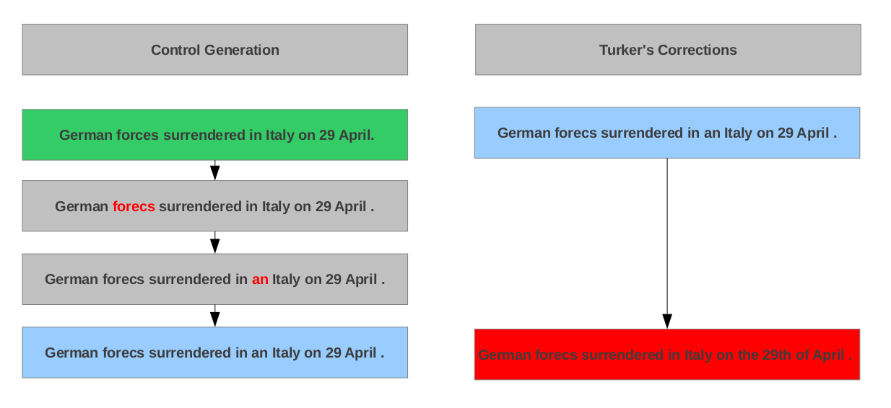 | 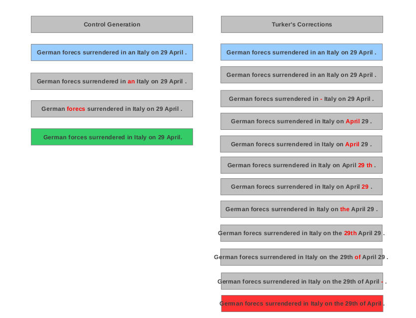 |

| (a) Change of one word to one word | (b) Change of one word to many words | (c) Change of many words to one word | (d) Change of many words to many words |
| 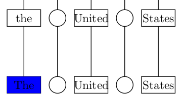 | 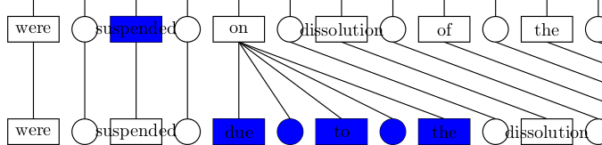 | 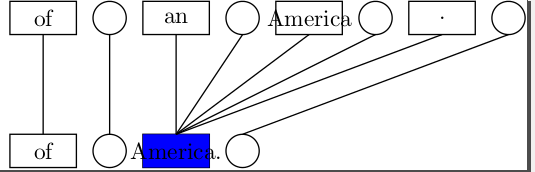 | 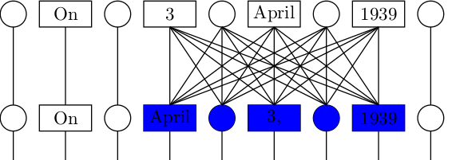 |
| (e) Insertion of a word | (f) Deletion of a word | (g) Reordering of a word | |
| 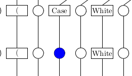 | 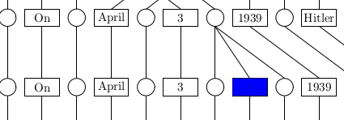 | 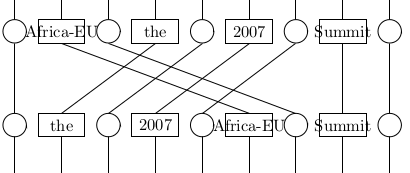 |
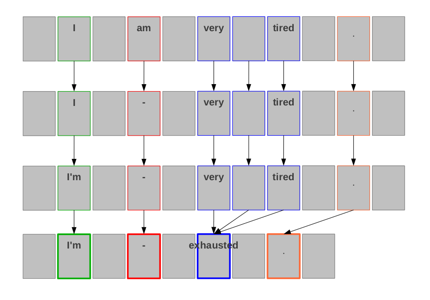
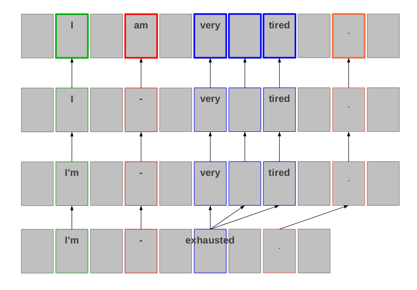

To make an edit, Turkers are asked to choose one of the following "highlighting modes", in order to identify the error-containing span in the sentence:

In Word and Phrase Mode, after the user has highlighted the error-containing span, they are presented with three edit choices: Change, Delete, or Move. Choosing Change displays a text box into which the Turker can type a new word or words; Move allows the Turker to drag and drop the selected word or words into an open space; Delete removes the word or words from the sentence. In Insert mode, after selecting a space into which to insert, the Turker is presented with a text box into which he can enter the word or words to be inserted.
| Change | Delete |
 |  |
| Move | Insert |
 |  |

Our original plan was to ask Turkers to both correct and annotate errors in one HIT. After selecting an error-containing span in the sentence, Turkers would be prompted to choose the most appropriate annotation from a hierarchical, multilevel drop-down menu, pictured below.

After working with this design, we decided that the task was too complicated and the probability of agreement between workers was very low. We decided instead to divide the task into two HITs: one in which workers identify and correct errors in the sentence (this is the HIT shown above), and one in which workers are presented with an original sentence and its correction and asked to choose an appropriate annotation for the error (still to be implemented). We believe that the agreement between annotations will be higher if multiple turkers provide annotations for a differen't turker's correction than if each corrector provides one annotation for their own correction.